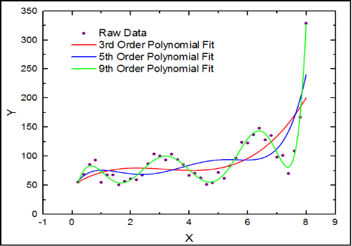
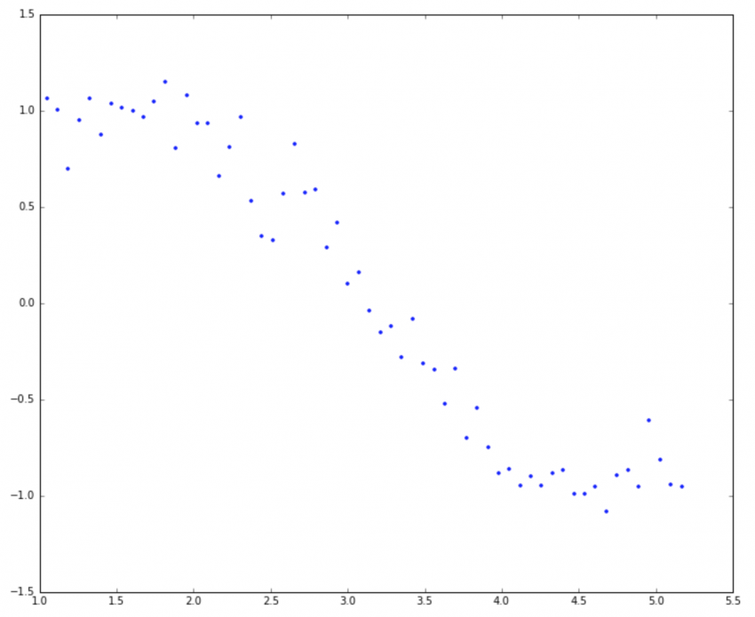
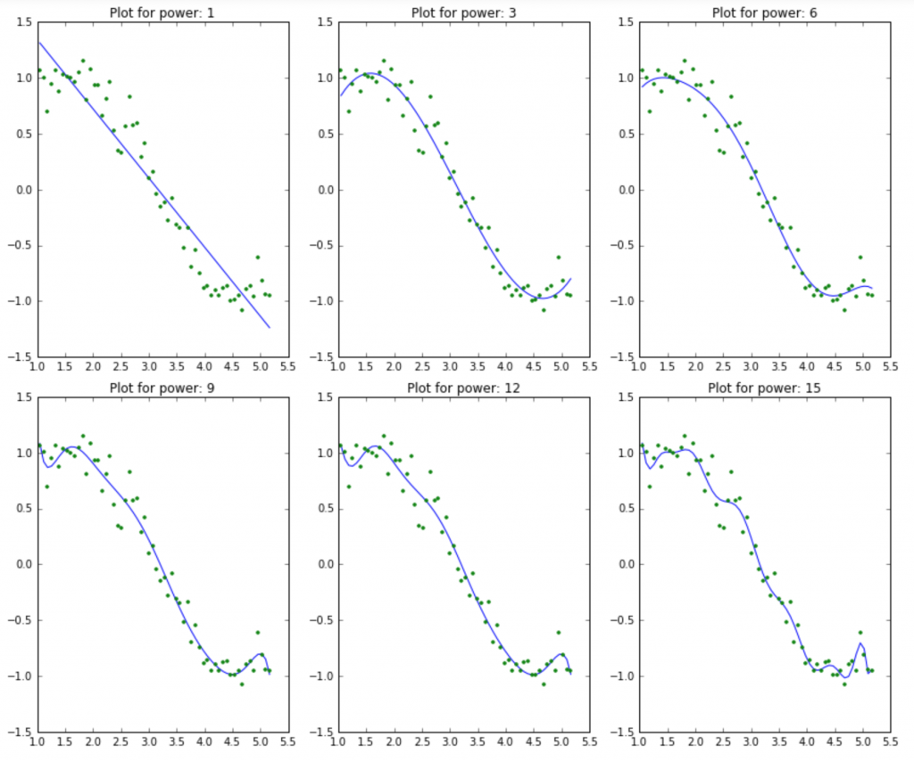
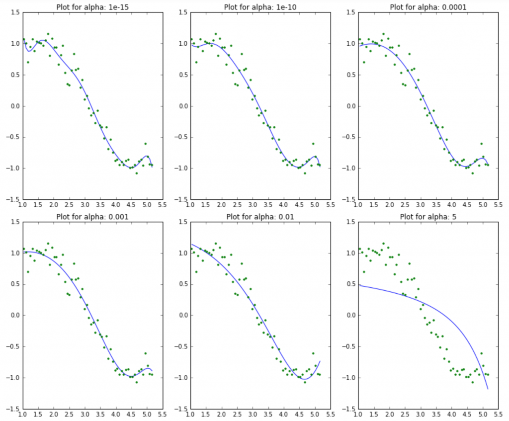
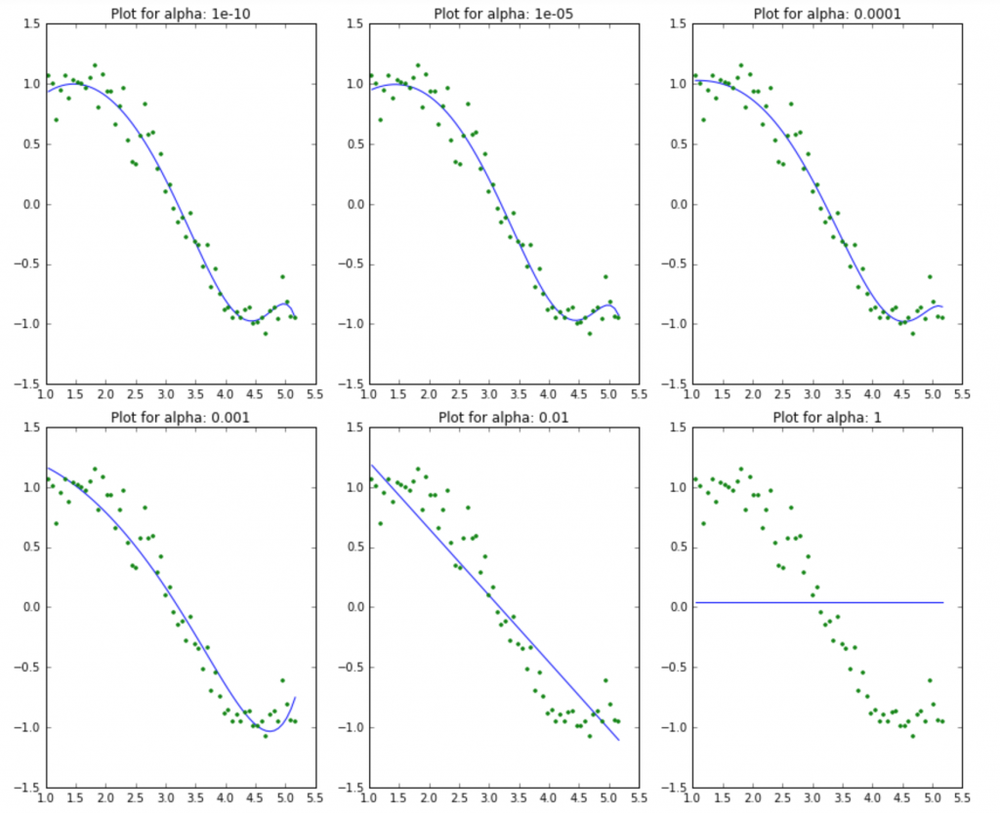

<!doctype html>
<html lang="en">
    <head>
        <meta charset="utf-8">
        <title>RevealJS : /media/pika/Workbench/workspace/slides/ridge-lasso-regression/ridge_lasso_regression.md</title>
        <link rel="stylesheet" href="css/reveal.css">
        <link rel="stylesheet" href="css/theme/night.css" id="theme">
        
       
        <!-- For syntax highlighting -->
        <link rel="stylesheet" href="lib/css/Zenburn.css">

        

        <!-- If the query includes 'print-pdf', use the PDF print sheet -->
        <script>
          document.write( '<link rel="stylesheet" href="css/print/' + ( window.location.search.match( /print-pdf/gi ) ? 'pdf' : 'paper' ) + '.css" type="text/css" media="print">' );
        </script>

        <style type="text/css">
            @page {    
              margin: 0;
              size: auto; 
            }
        </style>

        <script>
         if(window.location.search.match( /print-pdf-now/gi )) {
           window.print();
         }
      </script>

    </head>
    <body>

        <div class="reveal">
            <div class="slides"><section  data-markdown><script type="text/template">## Ridge and LASSO regression

<small>2018.04.02</small>

杜岳華
</script></section><section  data-markdown><script type="text/template">
## Outline

* Polynomial regression
* Power of model
* Overfitting
* Ridge regression
* LASSO regression
* LASSO for feature selection
</script></section><section  data-markdown><script type="text/template">
### Recall

$Y = f(X)$

<div class="fragment">
Linear regression: $f(X) = aX + b$
</div>

<div class="fragment">
Loss function (error): $\sum_i (\hat{y_i} - y_i)^2$
$= \sum_i (f(x_i) - y_i)^2$
</div>
</script></section><section  data-markdown><script type="text/template">
### Polynomial regression

$Y = f(X)$

$ = w_0 + w_1X + w_2X^2 + \dots + w_kX^k$

<div class="fragment">
Loss function: $\mathcal{L} = \sum_i (f(x_i) - y_i)^2$
</div>

<div class="fragment">
p.s. $X$ is random variable，$x_i$ is data
</div>
</script></section><section  data-markdown><script type="text/template">
### Power of model

1st order: $Y = w_0 + w_1X$

<div class="fragment">
2nd order: $Y = w_0 + w_1X + w_2X^2$
</div>

<div class="fragment">
3rd order: $Y = w_0 + w_1X + w_2X^2 + w_3X^3$
</div>

<div class="fragment">
Power: 1st < 2nd < 3rd < ... < k-th
</div>
</script></section><section  data-markdown><script type="text/template">
### Use of over-powered model


</script></section><section  data-markdown><script type="text/template">
### Use of over-powered model

那我們是不是拿全宇宙最強大的模型就可以 fit 任何的資料了？

<div class="fragment">
事情沒有你想像的單純！
</div>
</script></section><section  data-markdown><script type="text/template">
## Overfitting


</script></section><section  data-markdown><script type="text/template">
## 那怎麼辦？
</script></section><section  data-markdown><script type="text/template">
### Regularization

Add penalty!

<div class="fragment">
Loss function: $\mathcal{L} = \sum_i (f(x_i) - y_i)^2 + {\Large \Omega}$
</div>
</script></section><section  data-markdown><script type="text/template">
### Regularization

$\mathcal{L} = \sum_i (w_0 + w_1x_i + \dots + w_kx_i^k - y_i)^2 + {\Large \Omega}$

<div class="fragment">
$\mathcal{L} = \sum_i (\sum_j w_jx_i^j - y_i)^2 + {\Large \lambda\sum_j (w_j)^2}$
</div>
</script></section><section  data-markdown><script type="text/template">
### Ridge regression

$\mathcal{L} = \sum_i (\sum_j w_jx_i^j - y_i)^2 + \lambda\sum_k (w_k)^2$

<div class="fragment">
$\mathcal{l}^2 norm: \sum_k (w_k)^2$
</div>

<div class="fragment">
Purpose: reduce the complexity of model
</div>
</script></section><section  data-markdown><script type="text/template">

</script></section><section  data-markdown><script type="text/template">

</script></section><section  data-markdown><script type="text/template">

</script></section><section  data-markdown><script type="text/template">
### LASSO regression

Least Absolute Shrinkage and Selection Operator

$\mathcal{L} = \sum_i (\sum_j w_jx_i^j - y_i)^2 + \lambda\sum_k |w_k|$

<div class="fragment">
$\mathcal{l}^1 norm: \sum_k |w_k|$
</div>

<div class="fragment">
Purpose: reduce the effect of uncorrelated terms
</div>
</script></section><section  data-markdown><script type="text/template">

</script></section><section  data-markdown><script type="text/template">
### LASSO on multiple regression

$Y = f(X_1, X_2, \dots, X_k)$

$ = w_0 + w_1X_1 + w_2X_2 + \dots + w_kX_k$

<div class="fragment">
$ = 0.001 + 7.5X_1 + 0.35X_2 + \dots + 7.2X_k$
</div>

<div class="fragment">
$ = \ \  + 7.5X_1 + \ \  + \dots + 7.2X_k$
</div>
</script></section><section  data-markdown><script type="text/template">
### LASSO for feature selection

| $Y$ | $X_1$ | $X_2$ | $X_3$ | $\dots$ | $X_k$ |
| --- | --- | --- | --- | --- | --- |
| $\dots$ | $\dots$ | $\dots$ | $\dots$ | $\dots$ | $\dots$ |
| $\checkmark$ | $\checkmark$ | $\times$ | $\times$ | $\dots$ | $\checkmark$ |
</script></section><section  data-markdown><script type="text/template">
### 補充

$\mathcal{l}^2 norm: \sum_k (w_k)^2 = \lVert \mathbf{w} \rVert_2$

$\mathcal{l}^1 norm: \sum_k |w_k| = \lVert \mathbf{w} \rVert_1$

$\mathcal{l}^p norm: \sum_k |w_k|^p = \lVert \mathbf{w} \rVert_p$
</script></section><section  data-markdown><script type="text/template">
# Q&A
</script></section></div>
        </div>

        <script src="lib/js/head.min.js"></script>
        <script src="js/reveal.js"></script>

        <script>
            function extend() {
              var target = {};
              for (var i = 0; i < arguments.length; i++) {
                var source = arguments[i];
                for (var key in source) {
                  if (source.hasOwnProperty(key)) {
                    target[key] = source[key];
                  }
                }
              }
              return target;
            }
            // Optional libraries used to extend on reveal.js
            var deps = [
              { src: 'lib/js/classList.js', condition: function() { return !document.body.classList; } },
              { src: 'plugin/markdown/marked.js', condition: function() { return !!document.querySelector('[data-markdown]'); } },
              { src: 'plugin/markdown/markdown.js', condition: function() { return !!document.querySelector('[data-markdown]'); } },
              { src: 'plugin/highlight/highlight.js', async: true, callback: function() { hljs.initHighlightingOnLoad(); } },
              { src: 'plugin/notes/notes.js', async: true, condition: function() { return !!document.body.classList; } },
              { src: 'plugin/math/math.js', async: true }
            ];
            // default options to init reveal.js
            var defaultOptions = {
              controls: true,
              progress: true,
              history: true,
              center: true,
              transition: 'default',
              dependencies: deps
            };
            // options from URL query string
            var queryOptions = Reveal.getQueryHash() || {};
            var options = {
  "notesSeparator": "note:",
  "separator": "^[\r\n?|\n]---[\r\n?|\n]$",
  "verticalSeparator": "^[\r\n?|\n]--[\r\n?|\n]$",
  "theme": "night",
  "highlightTheme": "Zenburn",
  "controls": true,
  "progress": true,
  "slideNumber": true,
  "history": true,
  "keyboard": true,
  "overview": true,
  "center": true,
  "touch": true,
  "loop": false,
  "rtl": false,
  "shuffle": false,
  "fragments": true,
  "embedded": false,
  "help": true,
  "showNotes": false,
  "autoSlide": 0,
  "autoSlideStoppable": true,
  "mouseWheel": false,
  "hideAddressBar": true,
  "previewLinks": false,
  "transition": "default",
  "transitionSpeed": "default",
  "backgroundTransition": "default",
  "viewDistance": 3,
  "parallaxBackgroundImage": "",
  "parallaxBackgroundSize": "",
  "parallaxBackgroundHorizontal": null,
  "parallaxBackgroundVertical": null,
  "slideExplorerEnabled": true,
  "browserPath": "/opt/google/chrome/google-chrome",
  "attributes": ""
};
            options = extend(defaultOptions, options, queryOptions);
            Reveal.initialize(options);

        </script>
        
    </body>
</html>